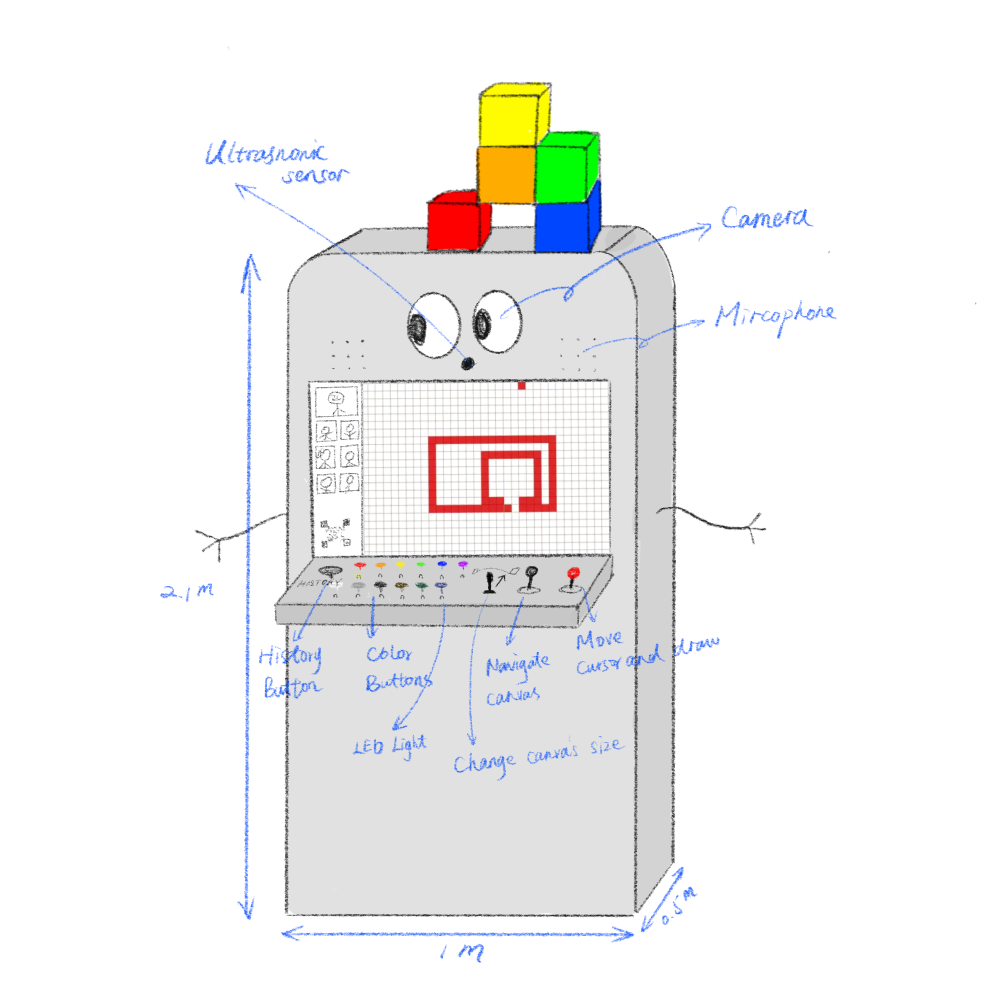
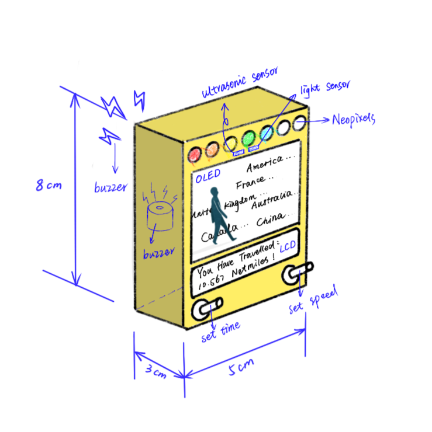
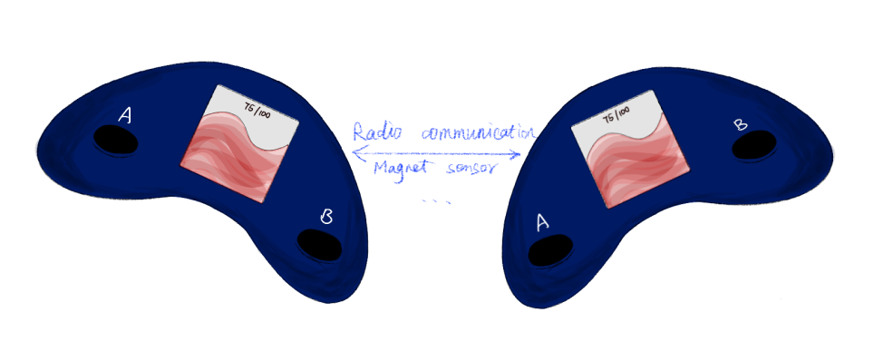
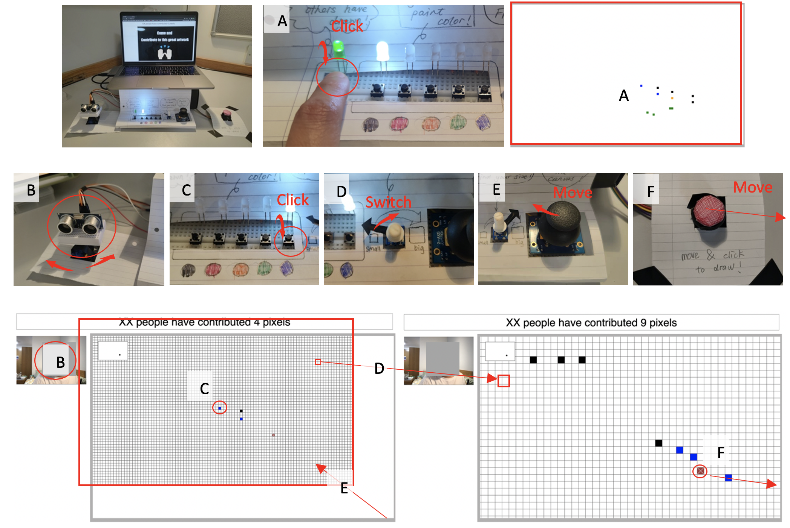
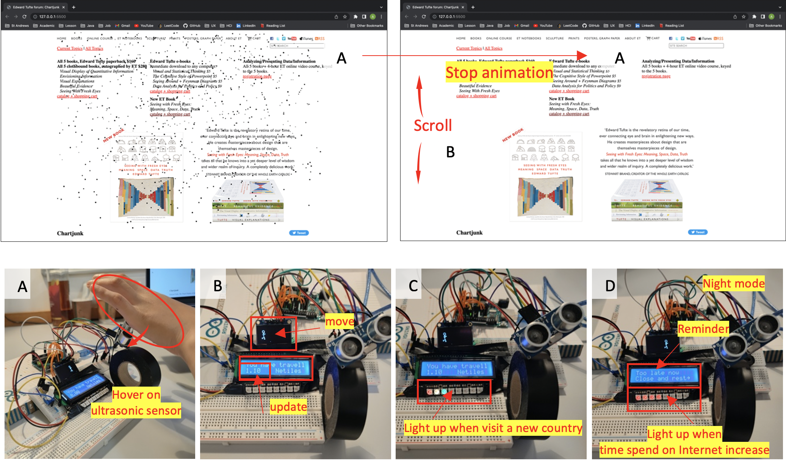
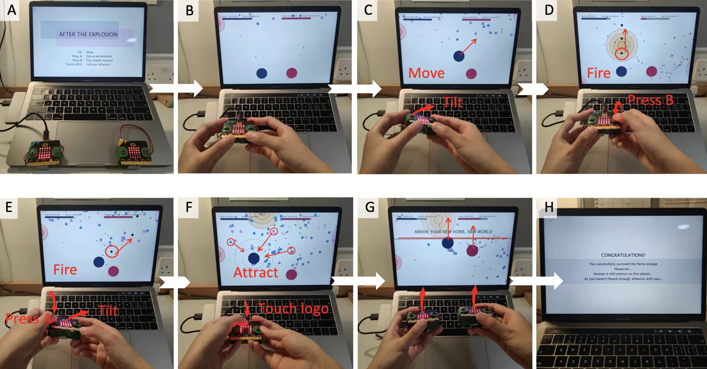

Interesting Software and Hardware
Explore different possibilities for Human-Computer Interaction
The projects I have created are a tangible expression of my thinking about creative ways of interaction. Hopefully, one day they can hit the market, be put into real use or be a part of amazing future products. I wish you enjoy them. Have fun! 😆
01
Sign Your Pixels
A Multi-users Interactive Installation
02
Netnet
An Online Journey Recorder
03
After the Explosion
A Two-Player Shooting Game

Sign Your Pixels is a public-faced interactive installation. With a motivation to explore a
new relationship between the human and the computer- machines would actively interact with
the public rather than passively wait to be activated, it is designed to allow multiple
users from different places to draw on the same pixel canvas and communicate with each
other.
It could detect whether someone is passing around, and invite users to participate in the
interaction. Users could not only manipulate the canvas and draw pixels with various colours
but also could interact with pixels drawn by other users in the past to create a piece of
artwork together.
Hardware: Arduino
Software: P5.js
Code: Java, JS, HTML/CSS
Click the link below to watch the demo video:
Here
How to Interact with It?
Overview
The figure below shows the ways to interact with the prototype. The ultrasonic sensor is built upon a servo so that it could continuously rotate to detect the surrounding conditions (part B of figure 1). By pressing the history button, users could revisit the history record drawn by other users (part A). Part C to F shows different functions that users have.
Details
Whenever the installation detects someone around the device, it would randomly play a sound that
says, "Hey, come here. Let's create a great creation!". If it detects someone standing in front
of the screen, the camera turns on and activates its face recognition. The interface would
switch
to the painting canvas when a face is detected, and the user can manipulate the hardware to
complete a series of tasks.
Each user has two minutes to paint, and when that time is up, a QR code would be generated on
the left side of the screen, which the user can scan to download their work and track record.
The
pixels drawn by the user cannot be undone but may be overwritten by other users. The user can
return to
the device and continue drawing.
Real-world Usage
This interactive installation is expected to be placed in multiple locations on campus or in different art museums, encouraging active interaction between the machine and the human, and exploring the possibility of multi-user collaboration in creating art. It can also help study users’ mentality since users may choose to return to their nearest installation multiple times, especially when they find their work being changed. Currently, this prototype is running on a local server; in the future, it will become an online platform that allows multiple users to paint interactively at different installations. In addition, users who are painting at the same time can communicate remotely via camera and work together collaboratively.
Now people have photos, videos, and maps to record their travels, and they recall or share
their experiences with friends by reviewing these media. However, people barely remember
what they have browsed on the Internet even though they spend hours on it every day.
Hence, with a motivation to explore a new way to record users’ online wanderings and a
uniquely immersive experience of browsing websites, Netnet was created. It is an online
journey recorder, that could map data into different forms, such as colours, sounds and
numbers. Using this designed hardware, users could review their online journeys in a fun and
meaningful way, help them realize the overmuch time they have spent on the Internet and
remind them to turn off their electronic devices to rest.
Hardware: Arduino, PC
Software: P5.js
Code: Java, JS, HTML/CSS
Click the link below to watch the demo video:
Here
How to Interact with It?
Overview
The figure below shows the ways to interact with the prototype. Users can stop animations by hovering over the ultrasonic sensor when they open a new website (parts A). Part B to D shows different functions that users have in day mode and night mode.
Details
A. Simulated weather conditions
This prototype also provides an immersive experience when visiting a website. When users open a new website, the program could pull weather information about the place where the website is published and show the corresponding animation, such as raining and snowing. Users could turn off the animation by simply hovering their hands over the ultrasonic sensor.
B. Day mode- record online journeys
It would automatically record the distances users have scrolled the page and map distances to a new unit of measurement- 'netmile' to record users’ online journeys and display the value through LCD. Besides, while users are scrolling the website, the little man on OLED will start to walk around and it is like a friend accompanying the user.
C. Day mode- Rainbow lights
When users visit a website coming from a new country, it would light up a new light and make a sound to notify users. As people tend to have a natural to collect a complete set, it could be satisfying is if users could light up eight lights in the rainbow colour as they have visited eight different countries a day.
D. Night mode
The night mode is a way to help users control their time using electronic devices. If the user is still using the electronic device after the break time they set. The prototype would show red lights to alert users. As time spent using electronic devices increases, the number of lit lamps will also increase.
Real-world Usage
This prototype is expected to be a cheap product that could be sold on the market. Ideally,
it looks like a mini television, and people could buy it and put it on a table or next to
the electronic devices they want to connect with.
It can connect with laptops or smartphones through Bluetooth with more vivid animations and
advanced functions. Users can switch potentiometers to change the time for night mode and
set the speed for animation. Besides, the light sensor could automatically adjust the
brightness of different screens, and the ultrasonic sensor is smaller than the one in the
kit and supports more functions to control the computer, such as taking screenshots.
Moreover, this product has a matching application, it allows users to select a certain period and have an overview of their online journeys on a3D map.
After the Explosion is a two-player cooperative shooting game. With a motivation to
explore a new form of shooting beyond the traditional shooting game and design a game
that could enhance the sense of communication and cooperation between players, this game
was born.
It is set in a catastrophic event where players need to find their companions and lead
them to their new homeland after the Earthexplosion. Supported by multiple sensors
provided in the micro: bit, such as accelerometer and touch sensor, players can play
this computer game by manipulating the hardware and engaging themselves in the game
through multi-dimensional outputs and feedback.
Hardware: Mirco: bit
Software: Processing
Code: Java, JavaScript
Click the link below to watch the demo video:
Here
Game Roles
A. Avoid attack from Enemies
The enemy will randomly fire bullets at two players and attack them, reducing the player's health value by 10 for each attack.
B. Cooperate with each other
Players could slowly recover when they are not under attack. Hence, players need to cover each other as the game can only be won if both players reach their new homeland alive.
C. Fire! Fire!
Different from traditional shooting games, players can fire bullets in any direction.
D. Find and call your alliance.
Players also need to find enough companions so that they can continue to perpetuate the human civilisation. They can actively seek out their companions, those they find will follow them around, or they can send out signals to gather more companions to where they are.
E. Bring your companions to the new homeland
Finding more companions means they are more vulnerable to enemy attacks. In this case, there is a trade-off about when and how to find their companions or players can even sacrifice them to protect themselves from enemy attacks if necessary. When players both reach the finishing line, they can unlock different game endings depending on the number of companions they have found.
